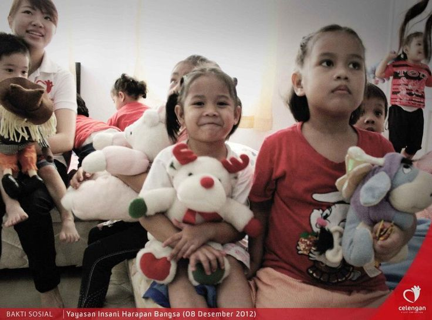

Penerima Manfaat Donasi
Melihat bagaimana donasi pakaianmu memberikan dampak nyata bagi mereka yang membutuhkan.

Penerima Bantuan di Makassar
Membantu distribusi pakaian musim dingin bagi korban bencana alam di daerah pegunungan yang terisolasi.
Learn more
Seragam Sekolah untuk Pelosok
Donasi seragam sekolah layak pakai untuk anak-anak di Gowa, mendukung akses pendidikan yang lebih baik.
Learn more
Pakaian Hangat Yayasan ABC
Program kerja sama dengan Yayasan ABC Foundation untuk menyalurkan pakaian hangat bagi panti asuhan.
Learn more
Distribusi Pakaian Kerja
Penyaluran pakaian formal layak pakai bagi mereka yang baru saja mendapatkan kesempatan kerja pertama.
Learn more